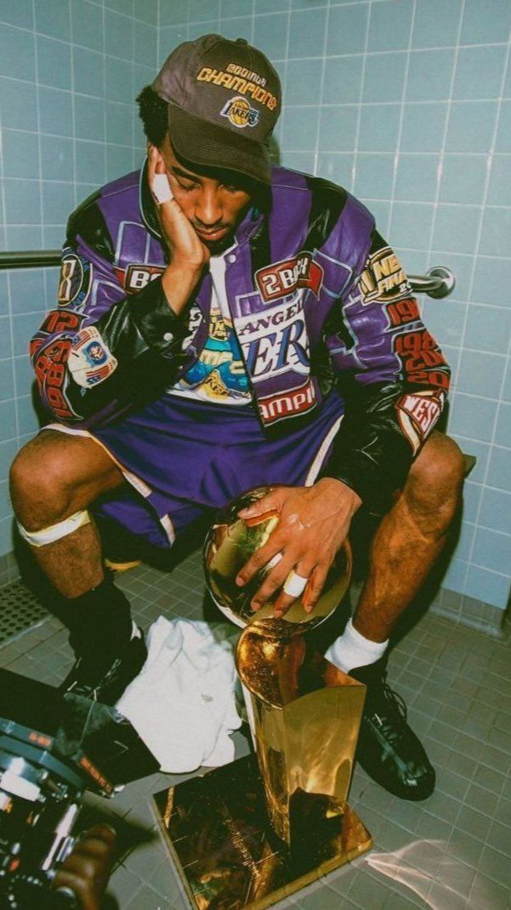

History |
| Home |
History |
Kobe |
Links |
Quiz |

Kobe Bryant, a basketball legend whose impact transcends the court, was born on August 23, 1978, in Philadelphia, Pennsylvania. From a young age, Kobe exhibited an extraordinary passion for basketball, inspired by his father, former NBA player Joe "Jellybean" Bryant. This passion, combined with an unparalleled work ethic, fueled Kobe's meteoric rise through the ranks of high school basketball, capturing the attention of scouts and fans alike. Drafted directly out of high school by the Charlotte Hornets in 1996 and subsequently traded to the Los Angeles Lakers, Kobe embarked on a career that would etch his name into the annals of basketball history.
Kobe Bryant's illustrious 20-year career with the Los Angeles Lakers is a testament to his indomitable spirit and relentless pursuit of excellence. Often compared to basketball greats like Michael Jordan, Kobe forged his own path, captivating audiences with his scoring prowess, tenacity, and unmatched competitiveness. Over the course of his career, he earned numerous accolades, including five NBA championships, two Olympic gold medals, and 18 All-Star selections. Kobe's impact extended beyond the stat sheet; his "Mamba Mentality" became synonymous with an unwavering dedication to hard work, resilience, and the pursuit of greatness. His memorable performances, including scoring 81 points in a single game in 2006, are etched in the memories of basketball enthusiasts around the world.
Kobe Bryant's influence extended far beyond the basketball court. In retirement, he seamlessly transitioned into a successful second act, exploring his creative side as an Academy Award-winning filmmaker, author, and entrepreneur. He embraced the role of mentor and advocate for women's sports, notably supporting his daughter Gianna's basketball aspirations. Tragically, Kobe's life was cut short in a helicopter crash on January 26, 2020, alongside his daughter and seven others. The global outpouring of grief and tributes that followed underscored the profound impact Kobe Bryant had on the world, leaving an enduring legacy that transcends sports and continues to inspire countless individuals to reach for their own greatness.
|